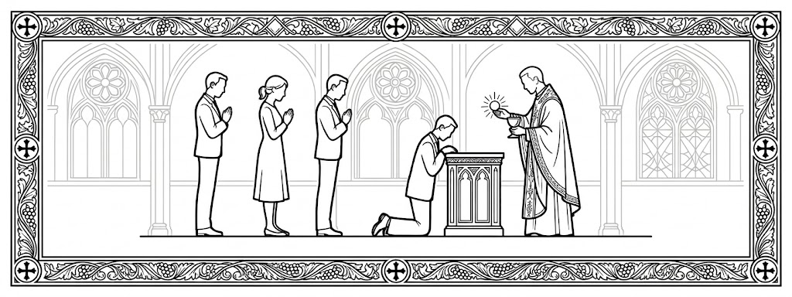
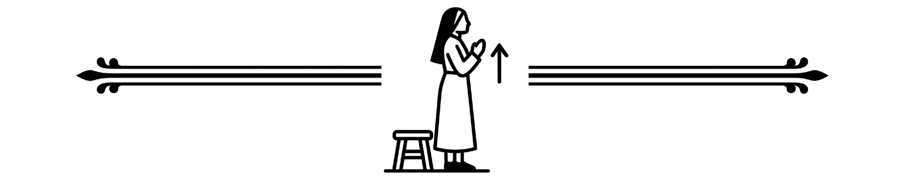

20
K. Pan wszechmogący i miłosierny niechaj udzieli wam przebaczenia,

rozgrzeszenia i odpuszczenia grzechów waszych.
W. Amen.
S. Indulgéntiam,
absolutiónem et remissiónem peccatórum vestrórum tríbuat vobis omnípotens et miséricors Dóminus.
M. Amen.
Komunia wiernych
Kapłan zwraca się do wiernych z cyborium i, trzymając Hostię Świętą, mówi:
Oto Baranek Boży: oto który gładzi grzechy świata.
Ecce Agnus Dei, ecce qui tollit peccáta mundi.
Wierni trzykrotnie biją się w piersi i mówią wraz z kapłanem:
Panie, nie jestem godzien, abyś wszedł do wnętrza mego, ale rzeknij tylko słowem, a będzie uzdrowiona dusza moja. (×3)
Dómine, non sum dignus, ut intres sub tectum meum: sed tantum dic verbo, et sanábitur ánima mea. (×3)
Kapłan, podając Komunię Świętą, sam wypowiada całą formułę, łącznie z końcowym „Amen”. Przyjmujący nie odpowiada „Amen”, lecz w milczeniu przyjmuje Komunię na język.

Ciało Pana naszego Jezusa Chrystusa niechaj strzeże duszy twojej na żywot wieczny. Amen.
Corpus Dómini nostri Iesu Christi custódiat ánimam tuam in vitam ætérnam. Amen.

Modlitwy po Komunii
K. Pan z wami.
W. I z duchem twoim.
K. Módlmy się.
S. Dóminus vobíscum.
M. Et cum spíritu tuo.
S. Orémus.